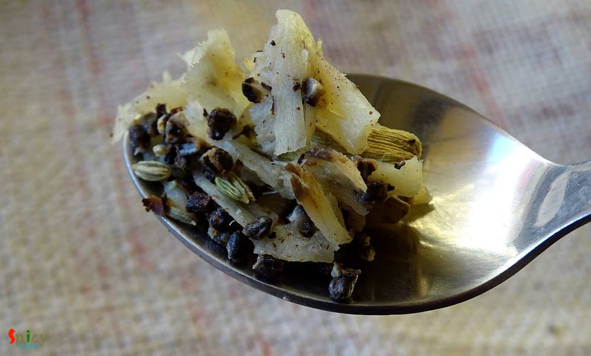

Simple and Easy Recipes
Masala Chai / Indian spiced Tea
© 2016 Spicy World, Published on: Mar 7, 2016
I think without a cup of tea every day is incomplete. Don't you think so ?? Tea plays a very important role in our life. In the morning my father needs a cup of tea, a biscuit and a newspaper. I guess every household has the same story in India. To me every gossip and get to gather is incomplete without tea. Every country has their own taste of tea. Here is the recipe of our Indian special 'masala chai' ...

Ingredients
- 1 cup of water.
- 1 cup of milk.
- 1 - 2 Teaspoons of tea leaves.
- 1 inch ginger.
- Spice (2 green cardamom, 4 cloves, 5 black peppercorns, 1/2 Teaspoon of fennel seeds / mouri).
- Sugar as per your taste.

Steps
Take ginger and all the whole spices in a pestle.
Then crush them well.
Boil a cup of water on stove top and add the this crushed masala.
Boil this for a minute.

Then add 1 - 2 Teaspoons of tea leaves to the boiling water.
Again boil this for 2 minutes.
Then add the milk. Cover the lid and let it boil for 3 to 4 minutes.

Lastly add sugar as per your taste. Mix well and turn off the heat.
Let it rest for 2 - 3 minutes then strain the tea in cups.
Your masala chai is ready ...
Enjoy this hot with some biscuits ...
")